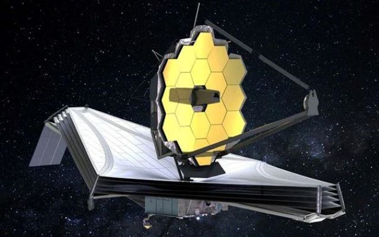

Telescope James Webb
The James Webb Space Telescope.As the largest optical telescope in
space, it is equipped with high-resolution and high-sensitivity
instruments, allowing it to view objects too old, distant, or faint
for the Hubble Space Telescope.
Wikipedia
YouTube